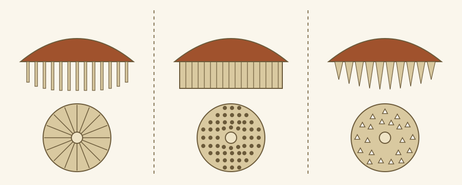

Mycology · lesson 06 · about 7 minutes
Anatomy of a mushroom
Zoom back out from one hypha to the whole mushroom. Every part of it, cap, stem, veils and gills, is made of the same threads, packed tight. Each part exists for one job: getting spores into the air.
Warm-up from lesson 5
1. A mushroom is hyphae, packed tight
You met pins in lesson 4. A pin (a primordium, under 2 mm) swells into a roundish, egg-like button made of tightly interwoven hyphae. The whole mushroom is built that way: no new kind of cell, just the threads from lesson 5 woven into solid tissue. Wikipedia: Mushroom
Mushrooms seem to appear overnight, but that's an illusion. Forming the primordia takes days. Then the mushroom rapidly pulls water in from the mycelium and expands, mostly by inflating cells it already built, not by making new ones. Wikipedia: Mushroom, "Growth"
Why you care: the final growth spurt is mostly water. A dry substrate or dry air during fruiting starves exactly that step. Lesson 4's "keep it humid" rule has an anatomical reason.
2. Cap and stem
The cap (cappello) carries the spore-making surface on its underside. The stem, or stipe (gambo), is sterile tissue: it makes no spores. Its job is to lift the cap so spores fall into wind currents or onto passing animals. Wikipedia: Stipe
Not every mushroom has a central stem. Oyster mushrooms (Pleurotus) attach their caps sideways, with a short or missing stem. Bracket fungi and puffballs have none at all. On a tree trunk or a grow-bag hole, the cap is already high enough, so a stalk would be wasted effort. Wikipedia: Stipe
3. Veils: wrappers for the young mushroom
Some mushrooms grow inside protective sheets of tissue that tear as they expand. The leftovers stay visible on the adult. Wikipedia: Mushroom
- Universal veil: a cottony layer around the whole button, like an eggshell. When it tears, it can leave a cup at the stem base, the volva (volva), and warts or patches on the cap. Wikipedia: Universal veil
- Partial veil: a sheet from the cap edge to the stem, covering the gills. When the cap opens, it tears and often leaves a ring (annulus) (anello) on the stem. In Cortinarius it's a cobweb-like curtain, a cortina. Wikipedia: Partial veil
Many mushrooms have neither veil. Wikipedia: Mushroom

4. The underside: where spores are made
The spore-bearing structure under the cap is the hymenophore. It's covered by the hymenium, the layer of spore-making cells: the basidia from lesson 3. The hymenophore comes in a few shapes: Wikipedia: Hymenophore
- Gills (lamelle): papery blades, as in button and oyster mushrooms. Wikipedia: Lamella
- Pores (pori): the openings of a spongy layer of tubes, as in boletes like porcini, and in tough bracket polypores. Wikipedia: Bolete
- Teeth: hanging spines, as in the hedgehog mushroom (steccherino). Wikipedia: Hymenophore

All three do the same thing: they pack a huge spore-making surface into a small cap. Gills are so effective at raising the surface-to-mass ratio that unrelated fungi evolved them separately, more than once. Wikipedia: Lamella
Quick check
Think it through
Puzzle to chew on
Gills didn't evolve once and get inherited. Several unrelated groups of fungi invented them separately, the way birds and bats separately invented wings. Why would evolution keep landing on the same shape? Think first, then open.
One explanation
Every spore costs surface: each basidium needs a spot on the hymenium. A flat cap underside offers little room. Folding it into thin blades multiplies the surface without adding much tissue, so you get more spores per gram of mushroom. Any lineage that stumbles into that design out-spores its neighbours, so it keeps getting selected. Pores and teeth are other routes to the same goal. Wikipedia: Lamella
Read next
Primary reading: Wikipedia: Mushroom, "Morphology" and "Growth". Then the short pages on stipe and gills.
← Lesson 5 · Mushroom anatomy reference · Life-cycle reference
Anything unclear? Ask me—I'm your teacher for this course.